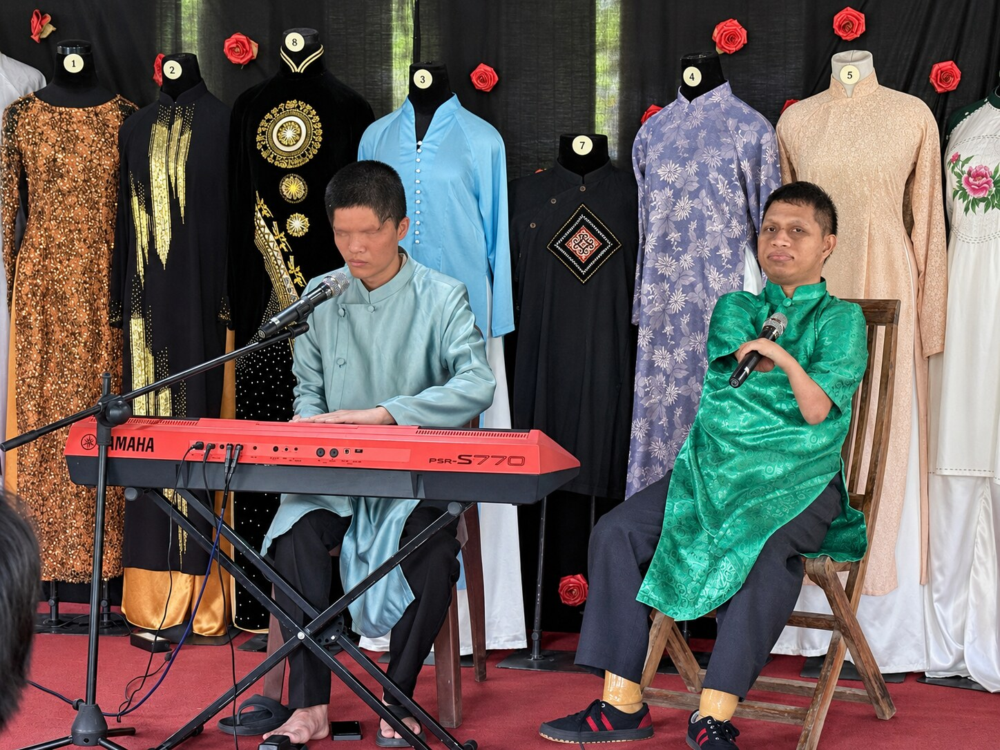
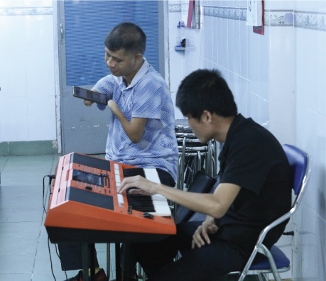

Hồ Chí Minh City · Việt Nam
Ban Nhạc
Da Cam
A group of Vietnamese musicians affected by Agent Orange meets to rehearse, sing and perform together in Hồ Chí Minh City.

Performances
Take Me to Brooklyn · Live performance
Take Me to Brooklyn · Ban Nhạc Da Cam
Watch this performance on YouTube ↗
Nhói lòng với nạn nhân nhiễm chất độc da cam bị mù, vừa đàn vừa hát

The band
How the band came together
Ban Nhạc Da Cam first began as a group of Agent Orange victims who performed each week at the War Remnants Museum in Hồ Chí Minh City. In 2026, Huỳnh Ngọc Vân, the museum’s former director and now director of the Áo Dài Museum, helped the group debut as a band to the public.
Since mid-2026, with support from Vân and the Hồ Chí Minh City Association for Victims of Agent Orange/Dioxin, they have performed at venues and cultural events across the city, including the Áo Dài Museum and the city’s pedestrian Book Street. The band’s ten members now meet on weekends to rehearse.
A song the band often performs is Nguyễn Hồng Sơn’s Cho con tới Brooklyn (Take Me to Brooklyn). Told from a child’s perspective, it gives voice to the pain of Vietnamese victims of Agent Orange and their struggle for justice. The band also sings of love, hope and friendship in songs such as Khát vọng (Aspiration) and Trịnh Công Sơn’s Nối vòng tay lớn (Joining Hands in a Great Circle).
Stories & photographs



Hồ Sơn · Sài Gòn Giải Phóng


Hồ Nhưỡng · Tuổi Trẻ
Recordings
Cho con tới Brooklyn Take me to Brooklyn
Music and lyrics by Nguyễn Hồng Sơn.
Vietnamese and English lyrics
CHO CON TỚI BROOKLYN
Nhạc và lời: Nguyễn Hồng Sơn
Mẹ ơi, mẹ ơi cớ sao thiếu tay con ?
Mẹ ơi, mẹ ơi sao thiếu chân con ?
Mẹ ơi, mẹ ơi sao con không có mắt ?
Con muốn thấy mẹ con muốn thấy cha
Vì chất độc da cam tàn phá thân con
Trẻ em Việt Nam đâu có lỗi gì
Mẹ ơi hỏi xem trẻ em nước Mỹ,
Người mẹ nước Mỹ, Người dân nước Mỹ
Có bao nhiêu người đau đớn như con
Đừng buồn mẹ ơi hãy bế con đi
Đừng khóc mẹ ơi, hãy dắt con đi
Để con được nghe và con sẽ nói
Con muốn đến trường, Con muốn hát ca.
Bạn bè gần xa đang đứng quanh ta
Cùng nối vòng tay công lý lương tri
Họ đang chờ con. Trẻ em nước Mỹ
Sát vai nhau cùng xuống đường
Hãy cùng đến Brooklyn, hãy cùng đến Brooklyn
Hãy cùng đến Brooklyn, nơi con sẽ nói:
Hãy cùng đến Brooklyn, hãy cùng đến Brooklyn
Hãy cùng đến Brooklyn. Nơi con sẽ hỏi: VÌ SAO ?
TAKE ME TO BROOKLYN
Music & Text: Nguyễn Hồng Sơn
Oh mum my mum, where is my arm ?
Oh mum my mum, where is my leg ?
My mum my mum, why can’t I see ?
How nice your face, how nice dad’s face?
As agent orange damages my life
Have Vietnam‘s children got any fault.
Please ask for me American children,
American Mother American People
Is there any one suffering like me.
Don’t be sad mother, please hold me
Don’t cry mother. Please take me
I want to hear, I want to say
I want to sing, to go to school
All worldwide children, friends are holding hands
to struggle for justice and humanity
waiting for me American children,
American Mother, American people.
We go together to Brooklyn
Take me to Brooklyn, Take me to Brooklyn,
Take me to Brooklyn
Where I will say Take me to Brooklyn
Where I‘ ll ask : WHY? WHY? WHY?